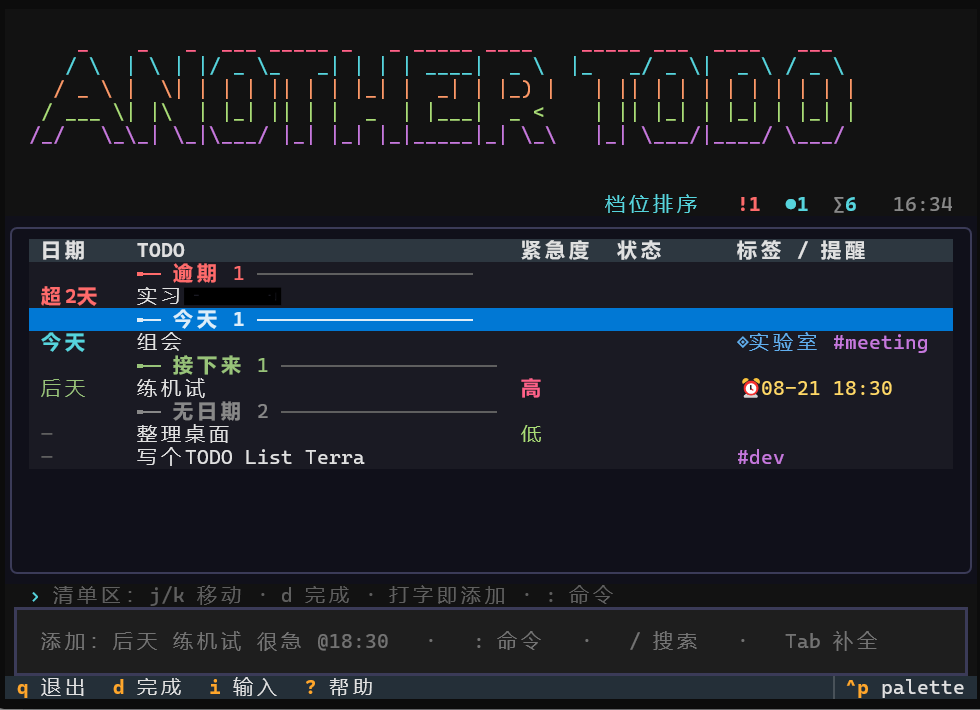

AnotherTODO：把待办留在终端，也留在自己手里

AnotherTODO（命令名 atd）是一个给“想快速记下、但不想把待办交给云端”的人做的轻量工具。它把数据保存在本机的 ~/.atd/，用纯文本 JSONL 做唯一事实源；需要跨设备时，再同步到用户自己的私有 Git 仓库。
在线文档在 AnotherTODO 文档站，可执行文件与版本更新见 GitHub Releases。
一行写下去，剩下的交给工具
atd add "后天 买牛奶 很急 @18:30" 会从一行文本里识别日期、时间、紧急度和提醒；标签、项目、备注、子任务、等待日期与重复规则也都能混写。写完后既可以继续在命令行里查询、完成和撤销，也可以直接输入 atd 进入交互式 TUI。
工具还提供了几件很实用的“后半程”能力：
- 提醒 watcher 用系统通知、邮件或自定义 hook 投递；失败会指数退避重试。
- 任务支持父子关系、归档、取消、搜索、统计和 JSON/CSV/Markdown 导出。
atd sync把本地数据作为一个私有 Git 仓库同步；冲突按任务 id 合并，删除优先于旧编辑。
完整输入语法、查询示例和平台安装方式可从 README 开始看。
架构：让两个界面只做各自该做的事
项目使用 TypeScript / Node.js，结构刻意保持直接：
CLI / Ink TUI
│
ApplicationService ← 所有写操作的唯一入口
│
core（解析、查询、排序、议程） ← 纯函数，不做 IO
│
storage / reminders / sync
│
~/.atd/*.jsonl + config.toml
一行输入先在 core/parse.ts 中被解析成结构化字段；CLI 与 TUI 都只调用 ApplicationService，不直接改任务。这样“完成重复任务后派生下一次”“编辑时清掉某个字段”一类规则只写一次，也不会因界面不同而分叉。
数据层以 contracts.ts 的 Zod schema 为契约。写入采用文件锁、写入后 fsync 与原子替换；归档有事务日志，提醒通过租约认领避免多个 watcher 重复投递。这些设计并不抢戏，但让这个看似很小的工具在多个进程、意外中断和跨设备同步时仍能守住数据。
如果你也偏好“数据在自己手里、界面尽量少打扰”的待办方式，可以直接从 项目仓库 获取源码或安装包。
评论